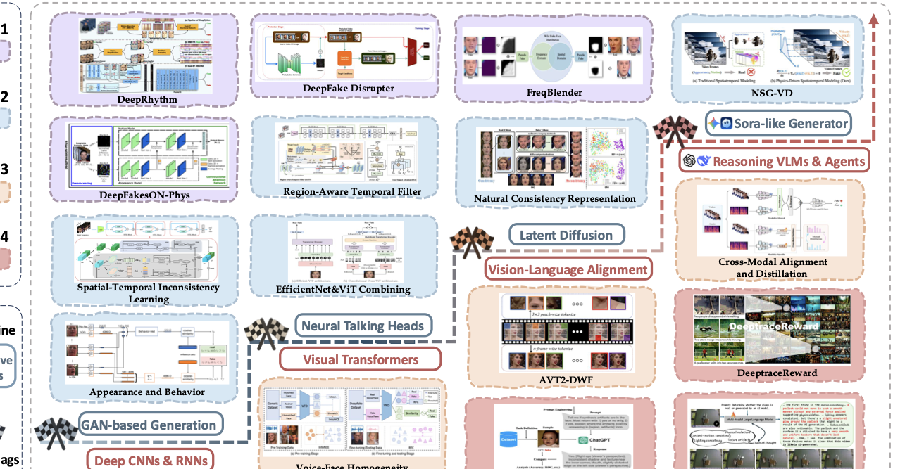

Problem
Factual Fidelity Verification
The question is not only whether a clip is fake, but which claim, event, entity, or temporal segment breaks consistency with reality.
As video generators move from localized edits to fully synthetic, cinematic scenes, artifact-centric detection is no longer enough. This survey reframes AIGC-V detection as factual fidelity verification: whether the events, entities, and physical processes depicted in a video remain consistent with the real world.
Corresponding author: Yuhan Liu · yuhan.liu@mbzuai.ac.ae
AIGC-V detection links visual evidence inside the clip with language-grounded verification over events, entities, and real-world facts.

The method landscape tracks the field's shift from low-level forensic screening to multimodal consistency verification and world-grounded reasoning.
The central argument of this survey is simple: modern AI-generated video cannot be understood through frame artifacts alone. Detection must combine low-level forensic traces, temporal reasoning, cross-modal agreement, and world-grounded claim checking.
The question is not only whether a clip is fake, but which claim, event, entity, or temporal segment breaks consistency with reality.
The visual view covers intrinsic and spatiotemporal evidence; the language view covers cross-modal consistency and world-level reasoning.
Trustworthy systems should identify, localize, and explain with structured evidence rather than collapse everything into a single score.
The survey organizes AI-generated video into three broad paradigms. Each one changes which cues are most useful, and therefore which detection strategies remain reliable.

The evidence profile shifts as generation moves from real-carrier manipulation to fully synthetic video synthesis.
Real footage is preserved while localized regions or attributes are re-rendered. The strongest evidence is often spatially concentrated and residual.
Speech drives the visual stream, making synchrony, speaker consistency, and speech-conditioned motion more decisive than generic image artifacts.
No authentic carrier remains. Detection shifts toward long-range coherence, world plausibility, provenance, and language-guided verification.
The taxonomy is organized by the dominant evidence pathway used for decision-making, not by a rigid task label. It moves from low-level perception to high-level cognition while keeping the boundary between layers operational.

Visual view: Layers 1-2. Language view: Layers 3-4. The boundary depends on what evidence the detector actually needs.
Focuses on whether frames, motion, and scene dynamics still behave like real captured footage. Best suited to residual traces, temporal coherence, and physically plausible evolution.
Frame-level distributional evidence such as frequency traces, geometry, physiology, and residual visual artifacts.
Boundary note: cues can be scored per frame and pooled.Sequence-level modeling of motion, physical feasibility, behavior, and long-range temporal coherence.
Boundary note: explicit inter-frame reasoning is required.Focuses on whether speech, text, events, and implied claims remain mutually consistent and externally verifiable, rather than only visually convincing.
Within-video verification across speech, text, and visuals, including lip-sync, voice-face identity, and semantic agreement.
Boundary note: evidence remains grounded within the clip itself.Prompts, agents, retrieval, and external knowledge are used to verify claims implied by the video against the real world.
Boundary note: external facts are needed for verification.The landscape figure highlights the transition from artifact matching in traditional deepfake detection to evidence-based semantic verification enabled by vision-language models and agentic pipelines.

| Year | L1 | L2 | L3 | L4 | Visual | Language | Language-View Share |
|---|---|---|---|---|---|---|---|
| 2020 | 5 | 7 | 1 | 0 | 12 | 1 | 7.7% yearly / 6.3% cumulative |
| 2021 | 5 | 6 | 4 | 0 | 11 | 4 | 26.7% yearly / 16.1% cumulative |
| 2022 | 4 | 3 | 2 | 0 | 7 | 2 | 22.2% yearly / 17.5% cumulative |
| 2023 | 3 | 3 | 4 | 0 | 6 | 4 | 40.0% yearly / 22.0% cumulative |
| 2024 | 9 | 5 | 4 | 3 | 14 | 7 | 33.3% yearly / 25.4% cumulative |
| 2025 | 0 | 18 | 15 | 15 | 18 | 30 | 62.5% yearly / 40.3% cumulative |
The survey covers 221 papers as of March 2026; the year-wise trend table reports complete publication years through 2025 only, so in-progress 2026 entries are not folded into the yearly breakdown.
Benchmark design should reveal why factual fidelity fails, where the failure occurs, and whether the system can ground its explanation with checkable evidence.
The deepest protocol tradition, emphasizing localized forensic residue, compression robustness, and cross-dataset transfer.
Smaller but tightly aligned with synchrony, speaker-content consistency, and timestamped localization.
Rapidly changing benchmarks targeting cross-generator transfer, semantic fabrication, plausibility, and prompt-driven world knowledge.
Adjacent diagnostics matter because trustworthy detection increasingly depends on physical plausibility and grounded explanations.
This section follows the copied list/ hierarchy directly rather than selecting a few distilled summaries. Browse the complete paper-first index by paradigm, detection layer, benchmark family, and adjacent diagnostic category below.
The viewer below loads the copied Markdown sources from survey-homepage/library/, preserving the original grouping logic from the list folder instead of compressing everything into a few sample tables.
Start with the complete paper list, then move into finer categories. The controls below mirror the original list hierarchy: generation paradigms, all four detection layers, and benchmark or adjacent diagnostic resources.
Loading the full paper list from the local Markdown copy.
Strong deployment is not just about improving raw classification accuracy. It requires systems that remain auditable when evidence is weak, conflicting, or incomplete.
Evaluation should show where factual fidelity breaks, not only whether real and fake clips separate on a closed set.
Claim annotations, timestamped grounding, and dynamic testbeds are increasingly necessary as generators suppress obvious artifacts.
Cross-layer fusion is only useful when it preserves traceable segments, mismatches, entities, and claims instead of collapsing into opaque confidence scores.
Provenance, uncertainty calibration, and abstention become part of the detection problem once decisions are used in high-stakes verification pipelines.
This page is a lightweight project homepage for the survey and its core figures. The assets below are bundled locally for direct static hosting.
@misc{hou2026detecting,
title = {Detecting AI-Generated Video: A Vision-Language Dual-View Survey},
author = {Dylan Xinming Hou and Juntian Zhang and Xu Gu and Yichen Wu and
Nils Lukas and Gus Xia and Xiuying Chen and Yuhan Liu},
year = {2026},
note = {Survey manuscript},
howpublished = {\url{assets/paper.pdf}}
}